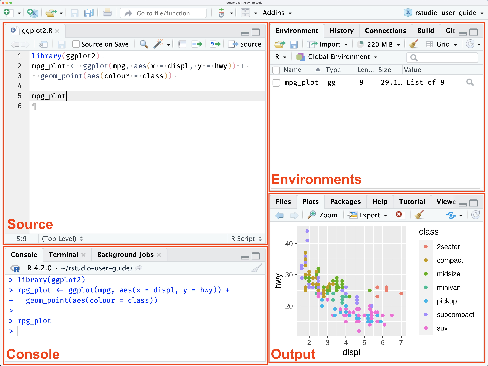

# 基本的な計算
1 + 2[1] 3今回は、画面の使い方を確認しながら、Projectとscript/lesson02.Rを作成する。追加パッケージのインストールは不要である。
RStudioの画面は複数の領域に分かれており、それぞれをペイン（pane）と呼ぶ。まず、図と自分の画面を対応させて各ペインを確認する。
初回起動時にはSourceが表示されず、3領域に見えることがある。Sourceはスクリプトを開くと表示される。配置は設定によって変わるため、位置と併せてタブ名を確認する。

出典：Posit, Get Started — RStudio Panes。
| ペイン | 主な役割 |
|---|---|
| Source | Rスクリプトを編集する |
| Console | コードを実行し、結果やエラーを確認する |
| Environment / History | 作成したオブジェクトや実行履歴を確認する |
| Files / Plots / Packages / Help | ファイル、図、パッケージ、ヘルプを確認する |
R Projectは、分析に使うスクリプト、データ、出力を一つのフォルダにまとめて管理する仕組みである。作業を始める際にProjectを開くと、そのフォルダを基準にファイルを扱える。
zemiを入力し、保存先を指定する。zemiになっていることを確認する。同名のProjectが既にある場合は、その.Rprojファイルから開く。
練習1： Projectとフォルダの準備
全員、次の作業を行い、授業で使用するProjectとデータを準備しなさい。
zemiという名前のProjectを作成する。既に作成した場合は、そのProjectを開く。dataフォルダと、Rスクリプトを保存するscriptフォルダを作成する。RStudioのFilesペインでProjectフォルダを表示し、New Folderからそれぞれ作成する。data_lesson02.csvを、作成したdataフォルダに移す。dataフォルダを開き、data_lesson02.csvがあることを確認する。作業後のフォルダ構成は、次のようになる。
zemi/
├── zemi.Rproj
├── data/
│ └── data_lesson02.csv
└── script/Rのコードを記録したファイルをRスクリプトという。File → New File → R Scriptを選択すると、Sourceペインに新しいRスクリプトの編集タブが開く。
#から行末まではコメントであり、計算として実行されない。Rスクリプトに次のコードを記述する。
# 基本的な計算
1 + 2[1] 31 + 2の行にカーソルを置き、Runを選択する。WindowsではCtrl + Enter、MacではCommand + Enterでも実行できる。複数行を選択した場合は、その範囲が実行される。
Consoleに[1] 3が表示される。3が計算結果であり、[1]は表示行の先頭の値が結果の第1要素であることを示す。
File → Save Asで、Project内のscriptフォルダを選び、lesson02.Rという名前で保存する。Projectを基準とした保存先はscript/lesson02.Rとなる。以降も同じファイルにコードを追加し、WindowsではCtrl + S、MacではCommand + Sで変更を保存する。
保存と実行は別の操作である。コードを実行しても、その変更がファイルに保存されるとは限らない。
Consoleにはコードを直接入力することもできる。>は入力を受け付ける状態を示す記号であり、コードの一部として入力しない。
Consoleで半角の10 / 4を入力し、Enterで実行する。結果は次のようになる。
> 10 / 4
[1] 2.5直接入力は短い確認に便利だが、残す必要のある処理はRスクリプトに記述する。以降の例と練習はlesson02.Rに追加して実行する。
+のままになる場合は、括弧や引用符の閉じ忘れを確認する。Escで入力を取り消し、式を修正する。練習2： lesson02.Rに(8 + 4) / 2を追加し、実行してから保存しなさい。
計算結果は6である。Rスクリプトに行を追加し、実行後に保存する。
Rでは、加減乗除やべき乗を演算子で記述する。以下の表で記号を確認し、コードを実行する。
| 演算子 | 意味 | 例 |
|---|---|---|
+、- |
加算、減算 | 10 - 4 |
*、/ |
乗算、除算 | 3 * 5 |
^ |
べき乗 | 2^3 |
10 - 4[1] 63 * 5[1] 152^3[1] 8(2 + 3) * 4[1] 20結果は順に6、15、8、20となる。括弧を用いると、先に計算する範囲を明示できる。
%%は除算の余り、%/%は整数除算の結果を返す。
10 %% 3[1] 110 %/% 3[1] 3結果はそれぞれ1と3である。
データや計算結果を保存し、名前を使って再利用するには、代入演算子<-を用いる。Rで扱う値やデータなどをオブジェクトという。
score <- 82
score[1] 82score <- 82は、右側の値を左側の名前に代入する操作である。代入だけでは通常、結果は表示されない。名前を実行すると値が表示され、Environmentにもscoreが追加される。
score + 5[1] 87score[1] 82最初の結果は87だが、score自体は82のままである。値を変更するには、計算結果を再び代入する。
score <- score + 5
print(score)[1] 87ここではscoreが87に更新される。print()は値を表示する関数であり、オブジェクト名を直接実行する代わりに使用できる。
名前にはscoreやaverage_scoreのように内容を表す英字名を使うと読みやすい。大文字と小文字は区別されるため、scoreとScoreは別の名前である。空白や、TRUE、FALSE、functionなどの予約語は使わない。
練習3： study_hoursに6を代入し、2を加えた結果を表示しなさい。その後、study_hours自体を8に更新しなさい。
study_hours <- 6
study_hours + 2
study_hours <- study_hours + 2
study_hours単に加算した段階では元の値は変わらず、再代入によって更新される。
関数は、値を受け取り、決められた処理を行って結果を返す仕組みである。関数名の後ろに括弧を書き、処理対象や設定を指定する。関数に渡す情報を引数という。
sqrt(16)[1] 4abs(-8)[1] 8round(3.1415926, digits = 3)[1] 3.142sqrt()は平方根、abs()は絶対値を求める。round()は数値を丸め、digits = 3は小数点以下の桁数を指定する。この例の結果は4、8、3.142である。
log()は自然対数、exp()は自然対数の底を用いた指数関数である。
log(10)[1] 2.302585exp(2)[1] 7.389056使い方を確認する場合は、Helpを利用する。次のいずれかを実行すると、round()の説明が開く。
?round
help(round)HelpのUsageで書式、Argumentsで引数、Valueで返り値、Examplesで使用例を確認する。引数の書式だけを表示するにはargs(round)、使用例を実行するにはexample(round)を使う。
練習4： sqrt(50)を計算し、その結果を小数第2位まで表示しなさい。
root_value <- sqrt(50)
round(root_value, digits = 2)結果は7.07である。関数を自作する方法は第4回で扱う。
データ型とは、値を数値、文字列、論理値などのどの種類として扱うかを示すものである。Rでは、データ型によって適用できる演算や関数の処理が異なる。見た目が同じ数字でも、文字列として保存されていると、そのままでは足し算や平均の計算に使えない。
例えば、82は数値なので、次の足し算の結果は87となる。
82 + 5[1] 87一方、引用符で囲んだ"82"は文字列である。次の式を実行すると、数値ではない値に算術演算を適用したことを示すエラーになり、87は得られない。
"82" + 5このように、見た目だけでは計算に使えるかどうかを判断できない。計算やデータの加工に進む前に、値が意図した型になっているかを確認することが重要である。
まず、基本となる数値、文字列、論理値を確認する。文字列は引用符で囲み、論理値はTRUEまたはFALSEで表す。class()を使うと型を確認できる。
student_name <- "Aiko"
score <- 82
attendance <- 0.94
passed <- TRUE
class(student_name)[1] "character"class(score)[1] "numeric"class(passed)[1] "logical"出力は順に"character"、"numeric"、"logical"となる。82は数値だが、"82"は文字列である。
as.numeric()、as.character()、as.logical()などで型を変換できる。
as.numeric("12.5")[1] 12.5as.character(100)[1] "100"as.logical(1)[1] TRUEas.numeric(FALSE)[1] 0数値として解釈できない文字列を変換すると、欠損値を表すNAになり、警告が表示される。
as.numeric("twelve")Warning: NAs introduced by coercion[1] NAこの警告は変換できなかったことを示している。NAの確認と集計方法は、第3回でベクトルとともに扱う。
比較演算子を使うと、条件を満たすかどうかがTRUEまたはFALSEで返される。
score >= 80[1] TRUEscore == 82[1] TRUEscore != 70[1] TRUE| 演算子 | 意味 |
|---|---|
> / < |
より大きい／より小さい |
>= / <= |
以上／以下 |
== / != |
等しい／等しくない |
& |
かつ |
\| |
または |
! |
否定 |
代入には<-、値が等しいかの判定には==を用いる。複数の条件は、論理演算子で組み合わせる。
score >= 60 & attendance >= 0.80[1] TRUEscore >= 90 | attendance == 1[1] FALSE!(score < 60)[1] TRUE得点82、出席率0.94なので、結果は順にTRUE、FALSE、TRUEとなる。
練習5： scoreが80以上、かつattendanceが0.90以上かどうかを判定しなさい。
score >= 80 & attendance >= 0.90結果はTRUEである。
| 表示 | 意味 |
|---|---|
| Error | その式の処理が完了しなかった |
| Warning | 処理は行われたが、結果の確認が必要である |
| Message | 関数やパッケージからの情報である |
エラーが出た場合は、オブジェクト名の綴り、大文字と小文字、括弧、引用符、カンマを確認する。原因を確認できない場合は、実行したコードとメッセージを併せて教員に伝える。
練習6： ある学生の小テストの得点は78点、期末テストの得点は92点、出席率は0.85である。総合点を「小テストの40%と期末テストの60%の合計」とし、総合点が80点以上、かつ出席率が0.80以上の場合を合格とする。
次の処理をscript/lesson02.Rに記述しなさい。
quiz_scoreとexam_score、出席率をattendance_rateに代入する。final_scoreに代入する。is_passedに代入する。class()でfinal_scoreとis_passedの型を確認する。quiz_score <- 78
exam_score <- 92
attendance_rate <- 0.85
final_score <- quiz_score * 0.40 + exam_score * 0.60
round(final_score, digits = 1)
is_passed <- final_score >= 80 & attendance_rate >= 0.80
is_passed
class(final_score)
class(is_passed)総合点は86.4点であり、出席率も基準を満たすため、is_passedはTRUEとなる。型はそれぞれ"numeric"、"logical"である。
Environmentに表示されるオブジェクトをまとめたものを作業領域（workspace）という。作業領域を保存すると、作成したデータや計算結果を次にProjectを開いたときに復元できる。授業では、前回の状態から作業を続けられるよう、自動保存と自動復元を有効にする。
zemiを開いた状態で、Tools → Project Options → Generalを選択し、次のように設定してOKで確定する。
| 設定項目 | 選択する値 |
|---|---|
| Restore .RData into workspace at startup | Yes |
| Save workspace to .RData on exit | Always |
Projectごとの設定はGlobal Optionsより優先される。このProjectでは、上の値を明示的に選択する。
Projectを通常の手順で閉じると、作業領域がProjectフォルダ直下の.RDataに保存される。次にzemi.Rprojを開くと、このファイルが読み込まれ、Environmentにオブジェクトが復元される。Posit：RStudio Projects
ただし、.RDataが保存するのはオブジェクトであり、Rスクリプトの変更ではない。script/lesson02.Rも別途保存する。また、CSVをdataフォルダに置くだけで、その内容が自動的に読み込まれるわけではない。
script/lesson02.Rを保存する。zemi.Rprojを開き直す。final_scoreやis_passedが復元されていることを確認する。print(final_score)
print(is_passed)練習6まで実行した場合、総合点は86.4、合格判定はTRUEの状態で保存される。ここではRスクリプトを自動実行しているのではなく、終了時に保存したオブジェクトを復元している。
次回以降も、同じProjectを開けば保存した状態から作業を再開できる。Rスクリプトを編集するときは、scriptフォルダのlesson02.Rを開く。